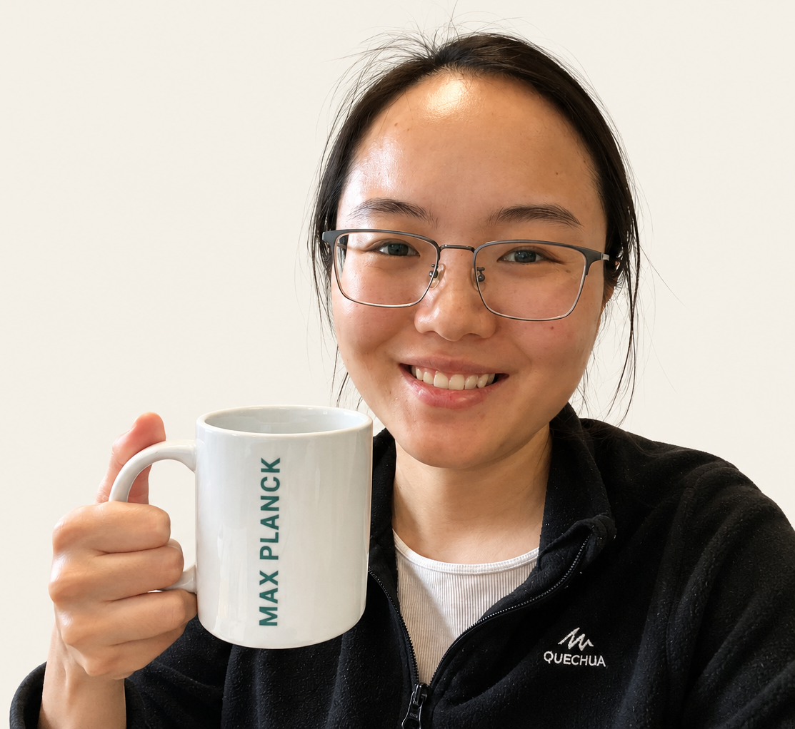

Shift 1
Answers are becoming abundant.
Questions are becoming the scarce resource.
Thinking in a Complex World explores how young people can define problems, build models, form judgment, and collaborate with AI in a complex and uncertain world.
When answers become cheap,
understanding becomes valuable.
Answers are becoming abundant.
Questions are becoming the scarce resource.
Knowledge can be generated.
Judgment cannot.
Intelligence is becoming distributed.
The future belongs to those who can think with others.
I explore how young people learn to understand complexity, uncertainty and AI.
Students should not only learn facts. They should learn how to turn reality into variables, relationships, assumptions and testable models.
The deepest learning often begins before problem solving: What is the real problem? What matters? What is uncertain? Who is affected?
AI is not only a tool for efficiency. It is a cognitive mirror that helps us understand how humans think, judge, create and take responsibility.
What scientists actually do.
Students explore why complex systems often behave in unexpected ways, and learn to think in terms of feedback, adaptation and uncertainty.
Students explore what remains uniquely human when AI can generate ideas, code and analysis, and learn how to judge when not to trust it.
Students explore how decisions are made before certainty arrives, and learn how to reason and act with incomplete information.
Years spent studying systems that cannot be understood through simple cause and effect.
Experience turning messy reality into assumptions, structures and testable ideas.
Exploring how these practices can become learning experiences for young people.
Hi! I'm Yimian. Currently, I'm a Postdoc Researcher at Max Planck Institute for Biogeochemistry, as well as Leipzig University. For years, my work has lived at the intersection of complex systems research, scientific modelling, and at the same time, I'm also interested in questions about how people learn. Studying forests, climate, and ecosystems taught me that important problems rarely arrive pre-defined—they arrive messy, full of feedback, trade-offs, and uncertainty. Building models became a way of making assumptions visible and ideas testable. That research life is not separate from the educational questions on this site; it is the evidence behind them. I am now exploring whether the practices scientists use to engage complexity can become learning experiences for young people—helping them move beyond answers toward understanding, framing, judgment, and collaboration with AI.
Read More
A place where ideas become learning.
Many schools teach knowledge. Some schools teach projects. Few schools are exploring a deeper question: How should young people learn to think when AI can generate answers?
Yungu is one of the few places where this question can be explored seriously. Its culture of real-world problems, technology creation and exploratory learning creates an unusual opportunity to rethink how young people learn.
I hope to contribute one additional perspective: learning through modelling. Helping students move beyond answers toward understanding, beyond projects toward systems, and beyond tools toward judgment.
I am exploring how young people can become problem framers, model builders and thoughtful collaborators with AI in an uncertain world.
Let's explore this together